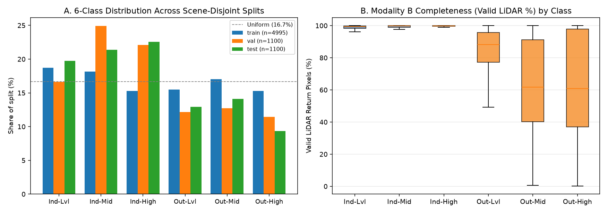
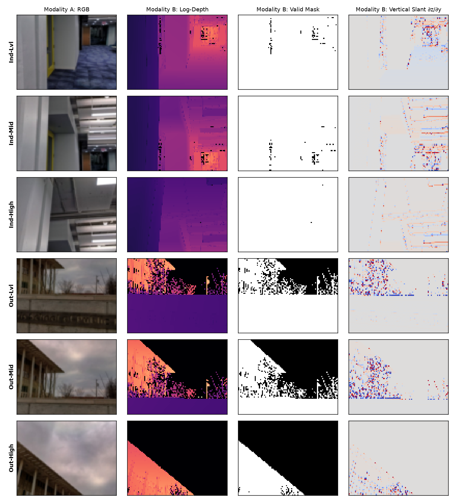
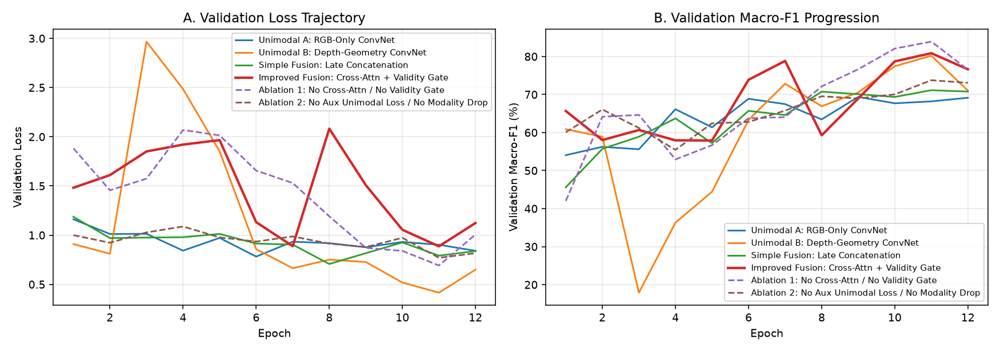
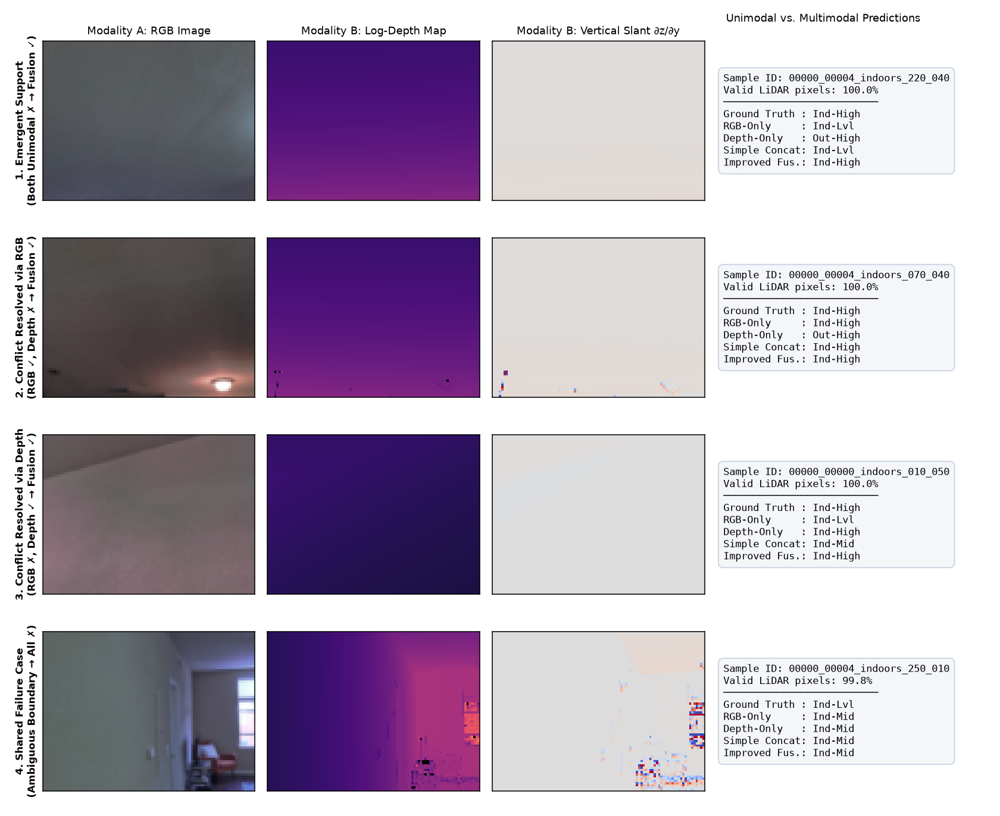
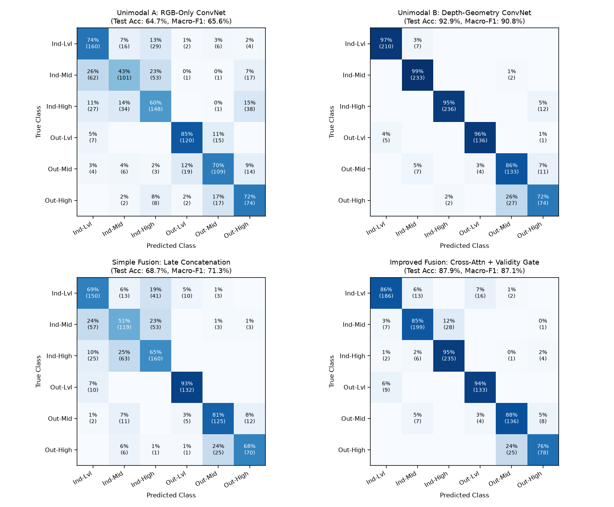

| Name | Student ID | Role |
|---|---|---|
| Trần Hoàng Vỹ Khang | 2352502 | Data & Reproducibility (Lead) – paired-data collection and pair-validity checks, leakage-aware split by entity/scene, multimodal data pipeline, seeds and configs, repository and checkpoints |
| Đỗ Đăng Khoa | 2352554 | Experiments & Analysis, Delivery – unimodal vs multimodal comparison, metrics, support and conflict cases, error analysis, compute cost, assignment page, slides and video |
| Dương Đăng Khoa | 2352551 | Modeling & Methods – per-modality encoders, fusion design and the improved multimodal model, methodology write-up, pipeline diagram, ablation design |
| Milestone | Deadline | Deliverable Summary | Status |
|---|---|---|---|
| M1 Proposal (15%) | 18 Nov 2026 | Multimodal Dataset Proposal: modalities, pair validity, scene split, metrics, baselines | Completed ✓ |
| M2 Draft (25%) | 25 Nov 2026 | Unimodal A (RGB), Unimodal B (Depth-Geometry), Simple Late Fusion with quantitative metrics | Completed ✓ |
| M3 Final (60%) | 02 Dec 2026 | Improved Cross-Attention + Validity-Gated Fusion, 2 ablations, support/conflict & missing-modality analysis, report | Completed (code, experiments & report) ✓ |
Autonomous robots and augmented-reality devices equipped with RGB-D sensors must simultaneously recognize the semantic environment domain (Indoor vs. Outdoor) and the camera viewing-elevation regime (Level 0°–10°, Mid-Elevated 20°–30°, High-Elevated 40°–50°) to calibrate navigation priors, plane-detection heuristics, and exposure/SLAM loops. We formulate this as a 6-class multimodal classification task over genuinely co-registered RGB camera images (Modality A) and 3D LiDAR depth + return-validity maps (Modality B):
| Component | Specification |
|---|---|
| Task Type | 6-Class Single-Label Multimodal Classification ({Indoor, Outdoor} × {Level 000–010°, Mid 020–030°, High 040–050°}) |
| Modality A (Visual Appearance) | Normalized RGB tensor $x_{\text{rgb}} \in \mathbb{R}^{3 \times 72 \times 96}$ capturing color, lighting, sky/foliage vs. wall/furniture textures |
| Modality B (3D LiDAR Geometry) | 3-channel geometric tensor $x_{\text{depth}} \in \mathbb{R}^{3 \times 72 \times 96}$: (1) normalized log-depth $\tilde{d} = \frac{\log(1+d)}{\log(1+200)}\cdot m$, (2) binary laser return validity mask $m \in \{0,1\}$, and (3) vertical log-depth finite difference $\partial_y \tilde{d}$ (surface slant cue) + scalar valid-pixel ratio $r_{\text{valid}} \in [0,1]$ |
| Output & Metrics | Class index $y \in \{0,\dots,5\}$; evaluated by Macro-F1 (primary), Accuracy, Domain Accuracy (Indoor vs. Outdoor), and Elevation Accuracy (Level vs. Mid vs. High) |
scripts/eda.py confirmed 100.0% file pairing (0 missing RGB, Depth, or Mask files across all 7,195 records). However, Modality B exhibits natural within-sample partial missingness: while indoor scenes average 98.1%–99.4% valid laser returns, outdoor mid- and high-elevation views lose 37.8%–37.9% of pixels (mean valid LiDAR rate 62.1%–62.2%) because laser pulses aimed at open sky never return.| Class ID | Class Name | Train (n=4,995) | Val (n=1,100) | Test (n=1,100) | Total (n=7,195) | Train Valid LiDAR % | Train Mean Depth |
|---|---|---|---|---|---|---|---|
| 0 | Indoor-Level (00–10°) | 934 (18.7%) | 183 (16.6%) | 217 (19.7%) | 1,334 (18.5%) | 98.1% | 4.00 m |
| 1 | Indoor-Mid (20–30°) | 908 (18.2%) | 274 (24.9%) | 235 (21.4%) | 1,417 (19.7%) | 98.7% | 3.66 m |
| 2 | Indoor-High (40–50°) | 764 (15.3%) | 243 (22.1%) | 248 (22.5%) | 1,255 (17.4%) | 99.4% | 2.75 m |
| 3 | Outdoor-Level (00–10°) | 775 (15.5%) | 134 (12.2%) | 142 (12.9%) | 1,051 (14.6%) | 84.8% | 11.53 m |
| 4 | Outdoor-Mid (20–30°) | 851 (17.0%) | 140 (12.7%) | 155 (14.1%) | 1,146 (15.9%) | 62.2% | 14.50 m |
| 5 | Outdoor-High (40–50°) | 763 (15.3%) | 126 (11.5%) | 103 (9.4%) | 992 (13.8%) | 62.1% | 9.19 m |


Raw Paired Data (RGB .jpg + LiDAR _depth.npy + _depth_mask.npy) → Preprocessing & Alignment (72×96 downsample; Modality A: ImageNet norm; Modality B: [log_d, mask, ∂z/∂y] + valid_ratio) → Synchronous DataLoader (joint horizontal flip in train; scene-disjoint splits) → Symmetric Modality Encoders (4-stage ConvNet: 3 → 32 → 64 → 96 → 128, yielding 3×4=12 spatial tokens + 128-d pooled vector) → Fusion Layer (Simple Late Concat vs. Bidirectional Cross-Modal Attention + Validity-Conditioned Reliability Gate) → Joint Multi-Task Loss (L_CE_fused + 0.3 * (L_CE_rgb + L_CE_depth) with p=0.15 training Modality Dropout) → Prediction & Evaluation (6-class logits → Macro-F1, Accuracy, Support/Conflict & Missing-Modality Audit)
rgb_only, 463,974 params): 4-stage ConvNet encoder (`Conv2d-BN-GELU` $\times 2$ per stage, channels $3 \to 32 \to 64 \to 96 \to 128$) on RGB appearance only, followed by `AvgPool2d(3, 3)`, `LayerNorm`, global token averaging, and a linear classifier.depth_only, 463,974 params): Identical 4-stage ConvNet backbone operating strictly on the 3-channel LiDAR geometry tensor $[\tilde{d}, m, \partial_y \tilde{d}]$. Invalid pixels ($m=0$) are zero-masked before gradient computation so sensor dropouts do not create artificial depth steps.simple_fusion, 960,326 params): Late concatenation of the pooled unimodal embeddings $[z_{\text{rgb}} \;;\; z_{\text{depth}}] \in \mathbb{R}^{256}$ projected through `Linear(256, 128) → LayerNorm → GELU → Dropout(0.2) → Linear(128, 6)` and trained with a single cross-entropy loss.improved_fusion, 1,137,236 params): Addresses three core weaknesses of naive late concatenation:
ablation_no_gate, 978,258 params): Removes bidirectional cross-modal attention and the validity-conditioned gate ($g \equiv 0.5$) while keeping auxiliary unimodal supervision ($\lambda_{\text{aux}} = 0.3$) and modality dropout ($p_{\text{drop}} = 0.15$) fixed.ablation_no_aux, 1,137,236 params): Retains bidirectional cross-modal attention and the validity gate, but removes auxiliary unimodal supervision ($\lambda_{\text{aux}} = 0$) and training modality dropout ($p_{\text{drop}} = 0$).| Experiment | Hypothesis | Changed Factor | Fixed Factors | Metrics & Decision Criterion |
|---|---|---|---|---|
| Exp 1: Unimodal vs. Simple Fusion ( rgb_only, depth_only vs. simple_fusion) |
Modality B (Depth-Geometry) will dominate camera-elevation accuracy because vertical surface slant $\partial_y \tilde{d}$ directly encodes camera pitch, while naive late concatenation without auxiliary supervision may overfit to training-room RGB textures. | Input modality (`RGB` only vs. `Depth` only vs. concatenated `RGB + Depth`). | Identical 4-stage `ModalityEncoder` (`463,974` params), AdamW (`lr=1e-3`, `wd=1e-4`), CosineAnnealingLR, 12 epochs, batch size 64, AMP, `seed=42`, scene split. | Test Macro-F1, Accuracy, Domain Acc, Elevation Acc. |
| Exp 2: Improved Fusion & Ablations ( improved_fusion vs. simple_fusion, ablation_no_gate, ablation_no_aux) |
Adding auxiliary unimodal supervision ($\lambda_{\text{aux}}=0.3$) prevents RGB texture overfitting (+12–19% Macro-F1 over unregularized fusion), while cross-attention + validity gating improves F1 on high-dropout outdoor classes (`Outdoor-Mid/High`) and preserves accuracy under complete LiDAR dropout. | (a) Cross-Attn + Validity Gate on/off; (b) Auxiliary loss + Modality Dropout on/off. | Same encoder backbones, optimizer, schedule, 12 epochs, batch size 64, `seed=42`, checkpoint rule (highest val Macro-F1). | Full Test Macro-F1, Noisy-LiDAR (`<65%` valid) Macro-F1, and Dropped-Modality (`0% LiDAR` / `0% RGB`) Macro-F1. |
| Model | Params | Val Acc | Val Macro-F1 | Test Acc | Test Macro-F1 | Test Domain Acc | Test Elev Acc | Train Time (s) | Infer (ms/pair) |
|---|---|---|---|---|---|---|---|---|---|
| Unimodal A: RGB-Only ConvNet | 463,974 | 68.18% | 69.38% | 64.73% | 65.62% | 90.91% | 70.36% | 62.0s (5.17s/ep) | 1.787 |
| Unimodal B: Depth-Geometry ConvNet | 463,974 | 83.73% | 80.20% | 92.91% | 90.84% | 97.45% | 95.45% | 63.4s (5.28s/ep) | 1.796 |
| Simple Fusion: Late Concatenation | 960,326 | 70.55% | 71.14% | 68.73% | 71.30% | 95.55% | 71.91% | 111.9s (9.31s/ep) | 4.841 |
| Improved Fusion: Cross-Attn + Validity Gate | 1,137,236 | 81.55% | 80.87% | 87.91% | 87.12% | 96.36% | 91.18% | 99.1s (8.25s/ep) | 5.548 |
| Ablation 1: No Cross-Attn / No Validity Gate (Aux + Drop kept) | 978,258 | 85.91% | 83.91% | 92.00% | 90.64% | 97.73% | 94.09% | 112.2s (9.33s/ep) | 5.117 |
| Ablation 2: No Aux Unimodal Loss / No Modality Drop | 1,137,236 | 73.27% | 73.76% | 73.55% | 74.74% | 95.64% | 76.36% | 122.6s (10.21s/ep) | 7.409 |
Hardware & Checkpoint Rule: Executed on an NVIDIA GeForce RTX 3050 Laptop GPU (4 GB VRAM, peak training VRAM ≤ 0.25 GB), Python 3.13.9, PyTorch 2.14.0+cu130, seed 42. Best checkpoint selected strictly by highest validation Macro-F1.
| Class | Train Valid LiDAR % | Unimodal A (RGB) | Unimodal B (Depth) | Simple Fusion | Improved Fusion |
|---|---|---|---|---|---|
| 0: Indoor-Level (00–10°) | 98.1% | 67.09% | 97.22% | 65.08% | 88.36% |
| 1: Indoor-Mid (20–30°) | 98.7% | 51.27% | 96.68% | 53.24% | 86.52% |
| 2: Indoor-High (40–50°) | 99.4% | 60.53% | 97.12% | 63.62% | 91.98% |
| 3: Outdoor-Level (00–10°) | 84.8% | 83.92% | 96.45% | 91.03% | 90.17% |
| 4: Outdoor-Mid (20–30°) | 62.2% | 71.71% | 83.91% | 80.39% | 85.27% |
| 5: Outdoor-High (40–50°) | 62.1% | 59.20% | 73.63% | 74.47% | 80.41% |

| Unimodal Agreement Regime (Test Split, n = 1,100) | Test Samples (%) | Simple Fusion Correct | Improved Fusion Correct | Interpretation |
|---|---|---|---|---|
| Both Unimodal Correct (RGB ✓, Depth ✓) | 671 (61.0%) | 578 / 671 (86.1%) | 643 / 671 (95.8%) | Improved Fusion preserves 95.8% of agreed predictions (+9.7% over Simple Fusion). |
| Conflict: RGB Correct, Depth Wrong (RGB ✓, Depth ✗) | 41 (3.7%) | 27 / 41 (65.9%) | 30 / 41 (73.2%) | Occurs mainly on high-dropout outdoor sky views; the validity gate down-weights noisy Depth and trusts RGB in 73.2% of cases. |
| Conflict: Depth Correct, RGB Wrong (RGB ✗, Depth ✓) | 351 (31.9%) | 140 / 351 (39.9%) | 275 / 351 (78.3%) | Occurs on textureless indoor walls/ceilings; Simple Fusion is misled by RGB 60.1% of the time, whereas Improved Fusion recovers 78.3% (+38.4 percentage points). |
| Emergent Support: Both Unimodal Wrong (RGB ✗, Depth ✗) | 37 (3.4%) | 11 / 37 (29.7%) | 19 / 37 (51.4%) | True cross-modal synergy: RGB identifies the environment domain while Depth resolves the elevation angle, rescuing 51.4% of samples where both unimodal models fail. |

| Fusion Configuration | Full Test Macro-F1 | Clean LiDAR (≥65% valid, n=900) | Noisy LiDAR (<65% valid, n=200) | Drop Depth at Test (0% LiDAR) | Drop RGB at Test (0% RGB) |
|---|---|---|---|---|---|
| Simple Fusion: Late Concatenation | 71.30% | 65.37% | 67.10% | 3.41% | 44.77% |
| Improved Fusion: Cross-Attn + Validity Gate | 87.12% | 84.74% | 91.92% | 59.36% | 73.24% |
| Ablation 1: No Cross-Attn / No Validity Gate (Aux + Drop kept) | 90.64% | 87.99% | 89.66% | 63.99% | 76.76% |
| Ablation 2: No Aux Unimodal Loss / No Modality Drop | 74.74% | 69.89% | 91.09% | 23.59% | 49.95% |

python train.py --config ... --seed 43.bash run_all.sh)Generative AI tools (Claude Code / Antigravity AI Assistant) were used in this assignment
strictly for code review, architecture control, cross-modal compliance verification,
and numerical consistency auditing, not for direct code modification or autonomous
authoring. Specifically, the tool was used to: (1) review cross-modal pair integrity (7,195
co-registered RGB–LiDAR pairs) and scene-disjoint split leakage checks against Handbook
Sections 27, 28.1, and 28.2; (2) control the symmetric encoder architecture (`463,974`
parameters per modality) and review the validity-conditioned gated cross-attention, auxiliary
unimodal supervision, and training modality-dropout mechanisms; and (3) audit the four-regime
support/conflict taxonomy and cross-check every reported number against the committed JSON run
artifacts under assignment3/outputs/. All source code, model implementations,
training runs, figures, and report conclusions were written, executed, and verified line by
line by the three group members on group hardware. Full nine-field disclosure logs are recorded
in AI_USAGE.md.